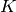

Graph Kernels¶
The code shown in this tutorial can be executed by running pyGPs/Demo/demo_GraphKernel.py
Load data¶
Mutag dataset [1] was constructed based on data from review of literatures about mutagenicities in Salmonella Typhimurium based on 200 aromatic and heteroaromatic nitro compounds. Mutag dataset is very suitable for machine learning and is widely used as one of the standard dataset.
data = np.load('MUTAG.npz')
A = csc_matrix( (data['adj_data'], data['adj_indice'], \
data['adj_indptr']), shape=data['adj_shape']) # n x n adjancy array (sparse matrix)
gr_id = data['graph_ind'] # n x 1 graph id array
node_label = data['responses'] # n x 1 node label array
graph_label = data['labels'] # N x 1 graph label array
Note that adjacency matrix for all graphs is usually too big to fit into memory when using  .
Therefore, we generate
.
Therefore, we generate  using sparse matrix csc_matrix provided by scipy.
using sparse matrix csc_matrix provided by scipy.
Compute propagation kernel matrix¶
Generate prapagation kernel based on given graph data.
num_Iteration = 10
w = 1e-4
dist = 'tv' # possible values: 'tv', 'hellinger'
K = graphKernels.propagationKernel(A, node_label, gr_id, num_Iteration, w, dist, 'label_diffusion')
Adjacency matrix can either be in format of standard numpy matrix or sparse matrix.
Standard GP Classification¶
 is a big square matrix with all rows and columns of the number of data points. By specifying the indice of training data and test data, we will form two matrix M1 and M2 with the exact format which pyGPs.Core.cov.Pre needed.
M1,M2 = graphUtil.formKernelMatrix(Matrix, indice_train, indice_test)
k = pyGPs.cov.Pre(M1,M2)
- M1 is a matrix with shape number of training points plus 1 by number of test points
- cross covariances matrix (train by test)
- last row is self covariances (diagonal of test by test)
- M2 is a square matrix with number of training points for each dimension
- training set covariance matrix (train by train)
The following is the standard way to do GP classification
model = pyGPs.GPC()
model.setPrior(kernel=k)
model.fit(x_train, y_train)
model.predict(x_test)
| [1] | Feragen, A., Kasenburg, N., Petersen, J., de Bruijne, M., Borgwardt, K.M.: Scalable kernels for graphs with continuous attributes. 2013. |